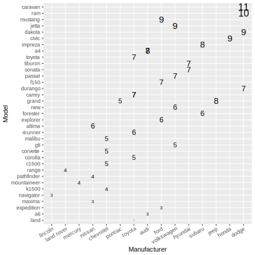
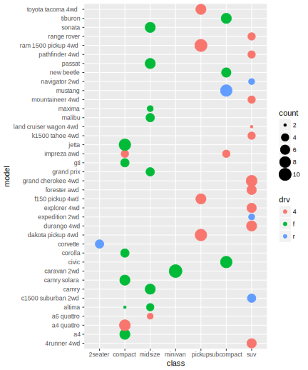
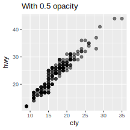

Getting Started
Fuel economy data
Exercise 2.2.1
List five functions that you could use to get more information about the
mpgdataset.str,summaryHow can you find out what other datasets are included with ggplot2?
data_ggplot <- data(package = "ggplot2") pander(data_ggplot$result[, -c(1:2)], justify = "rl", split.cells = 50, emphasize.verbatim.cols = 1, caption = "(\\#tab:ggplot2-data) Datasets in ggplot2 package")Table 1: Datasets in ggplot2 package Item Title diamondsPrices of 50,000 round cut diamonds economicsUS economic time series economics_longUS economic time series faithfuld2d density estimate of Old Faithful data luv_colours‘colors()’ in Luv space midwestMidwest demographics mpgFuel economy data from 1999 and 2008 for 38 popular models of car msleepAn updated and expanded version of the mammals sleep dataset presidentialTerms of 11 presidents from Eisenhower to Obama sealsVector field of seal movements txhousingHousing sales in TX Apart from the US, most countries use fuel consumption (fuel consumed over fixed distance) rather than fuel economy (distance travelled with fixed amount of fuel). How could you convert
ctyandhwyinto the European standard of l/100km?litre_per_km <- function(mile_per_gallon) { return(3.78541 / (1.60934 * mile_per_gallon)) } mpg_eu <- mpg %>% mutate(cty = litre_per_km(cty) * 100, hwy = litre_per_km(hwy) * 100)Which manufacturer has the most the models in this dataset? Which model has the most variations? Does your answer change if you remove the redundant specification of drive train (e.g. “pathfinder 4wd”, “a4 quattro”) from the model name?
Manufacturer with Most models:
mpg %>% group_by(manufacturer) %>% summarize(model_count = length(unique(model))) %>% arrange(-model_count) %>% ggplot(aes(model_count, reorder(manufacturer, model_count))) + geom_point() + labs(x = "Total Number of unique Models", y = NULL)Model with most variations:
mpg %>% mutate(model_trim = gsub("([a-zA-Z0-9]+).*", "\\1", model)) %>% group_by(model) %>% summarize(variation = length(model)) %>% arrange(-variation) %>% ggplot(aes(variation, reorder(model, variation))) + geom_point() + labs(x = "Total number of cars in each model", y = NULL)
Variation after removing redundant specification:
mpg %>% mutate(model_trim = gsub("([a-zA-Z0-9]+).*", "\\1", model)) %>% group_by(model_trim) %>% summarize(variation = length(model)) %>% arrange(-variation) %>% ggplot(aes(variation, reorder(model_trim, variation))) + geom_point() + labs(x = "Total number of cars in each model", y = NULL)
Key components
Exercises 2.3.1
How would you describe the relationship between
ctyandhwy? Do you have any concerns about drawing conclusions from that plot?ggplot(mpg, aes(cty, hwy)) + geom_point(position = "jitter") Its a linear relationship.
What does
ggplot(mpg, aes(model, manufacturer)) + geom point()show? Is it useful? How could you modify the data to make it more informative?Not very informative but shows how may models a manufacture have. It is more visible if we use
geom_countwhich uses thecountsummary statistics for each combination ofmodelandmanufacturer.- Describe the data, aesthetic mappings and layers used for each of the following plots. You’ll need to guess a little because you haven’t seen all the datasets and functions yet, but use your common sense! See if you can predict what the plot will look like before running the code.
ggplot(mpg, aes(cty, hwy)) + geom point()Data is
mpg,xandyaxis are mapped toctyandhwyvariables and a layer ofpointis added.ggplot(diamonds, aes(carat, price)) + geom point()Data is
diamonds,xandyaxis are mapped tocaratandpricevariables and a layer ofpointis added.ggplot(economics, aes(date, unemploy)) + geom line()Data is
economics,xandyaxis are mapped todateandunemployvariables and a layer oflineis added.ggplot(mpg, aes(cty)) + geom histogram()Data is
mpg,xaxis are mapped toctyand a layer ofhistogramis added which uses the default bins of30.
Colour, size, shape and other aesthetic attributes
Exercises 2.4.1
- Experiment with the colour, shape and size aesthetics. What happens when you map them to continuous values? What about categorical values? What happens when you use more than one aesthetic in a plot?
- What happens if you map a continuous variable to shape? Why? What happens if you map trans to shape? Why?
How is drive train related to fuel economy? How is drive train related to engine size and class?
mpg %>% group_by(model, class, drv) %>% summarize(count = n()) %>% ggplot(aes(class, model, color = drv, size = count)) + geom_point()Here, we see that
suvandpickuphas mostly 4 whell drive while rest are front-wheeled drive.
Facetting
Exercises 2.5.1
What happens if you try to facet by a continuous variable like
hwy? What aboutcyl? What’s the key difference?When a continuous variables, like
hwy, is used for facet, ggplot converts it into factor and creates facet from all unique value of that continuous variable. Herehwyhas many unique values so we will get many facets for each of them whilecylhas few discrete values and is useful to use for faceting.Use facetting to explore the 3-way relationship between fuel economy, engine size, and number of cylinders. How does facetting by number of cylinders change your assessement of the relationship between engine size and fuel economy?
ggplot(mpg, aes(cty, hwy, color = displ)) + geom_point(alpha = 0.5, position = "jitter") + facet_grid(.~cyl, labeller = label_both)
Here we can see that larger engine size has lower milage in both city and highway. In addition, vechile with large number of cylender has larger engine size. Further there are very few vechile having 5 cylinder.
Read the documentation for
facet wrap(). What arguments can you use to control how many rows and columns appear in the output?The
nrowandncolarguments infacet_wrap()controls the number of rows and columns.What does the scales argument to facet wrap() do? When might you use it?
Here
scalescan take three values –free,free_xandfree_y.free_xgives separate x-axis for each facet,free_ygives separate y-axis for each facet and similarly,freegives separate x and y axis for each facet.